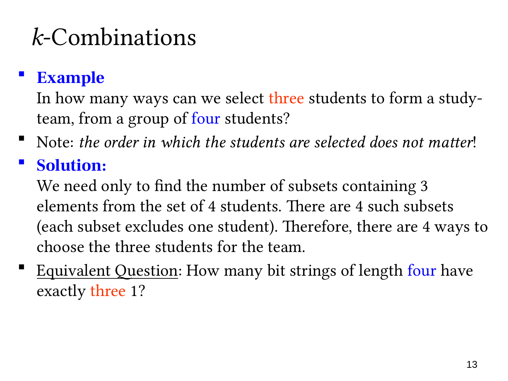

L1.6 · 第 13 页讲解原文
查看这一页课件

不关心次序：从四人中选三人组队
从四名学生中选三人组成学习小组，没有不同职位，也不记录选人的先后。同样的三个人构成同一个小组，所以这是 combination（组合）。
设四人为 A、B、C、D，可能的小组为
{A,B,C},{A,B,D},{A,C,D},{B,C,D},
共有 4 个。更快的想法是：选三人等价于确定唯一没有入选的人，这个人有 4 种选择。
课件给出的等价问题是：长度为 4、恰有三个 1 的位串有多少个？固定四个位置分别代表 A、B、C、D，用 1 表示入选，0 表示未入选。上述四组分别对应 1110、1101、1011、0111。
这里位串位置仍然重要，因为每个位置代表特定学生；但我们选择的是哪些位置为 1，不是在排列三名学生。这种对应把固定大小子集的计数转化为选位置的问题。
若用 P(4,3)=24，会把同一个三人组的 3!=6 个选择次序重复计算，所以真正的小组数是 24/6=4。